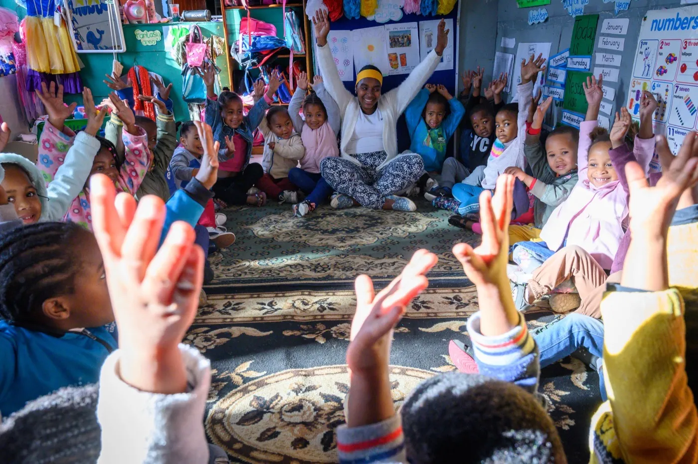
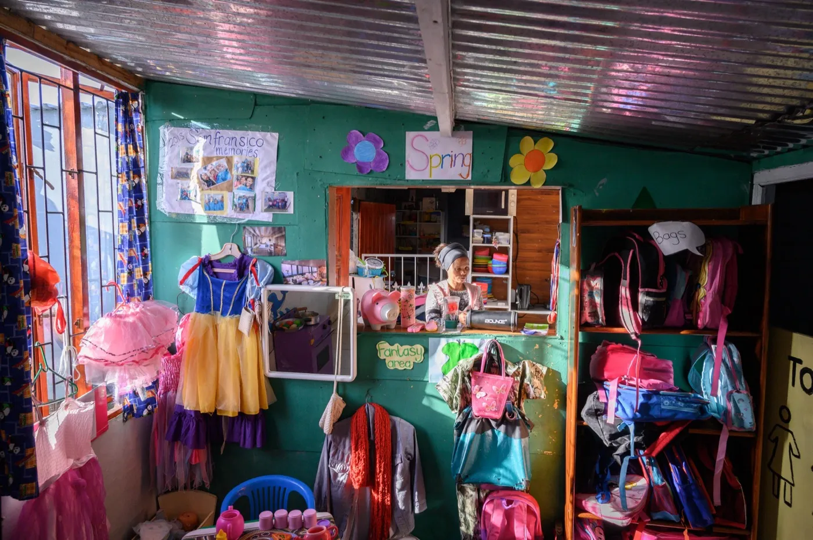
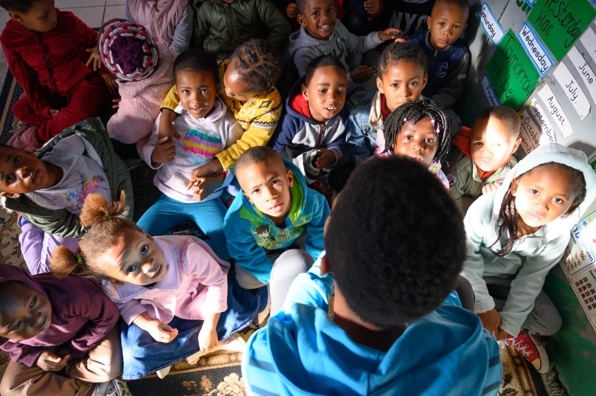
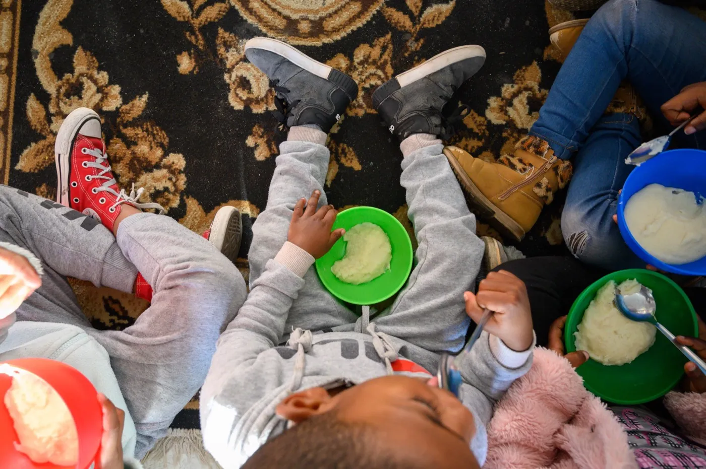
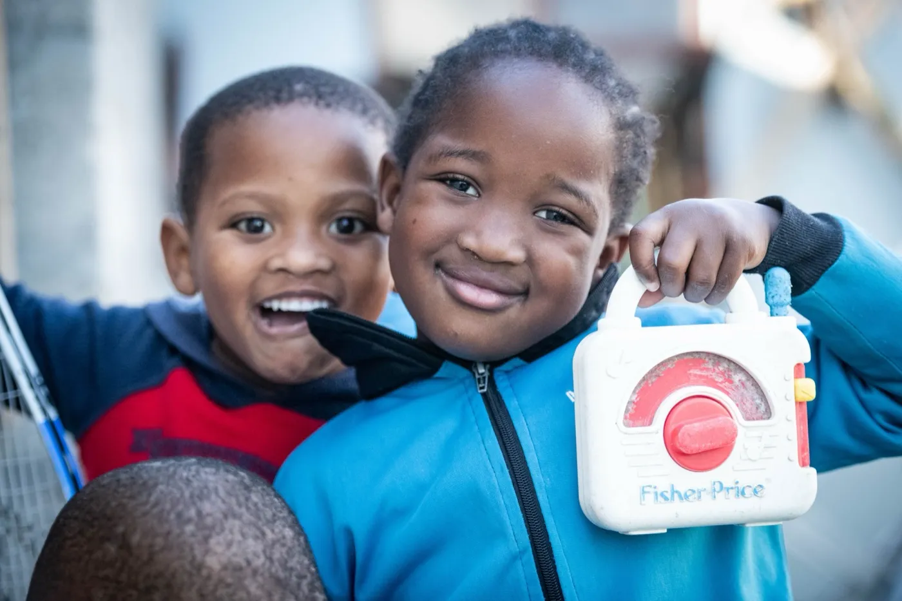
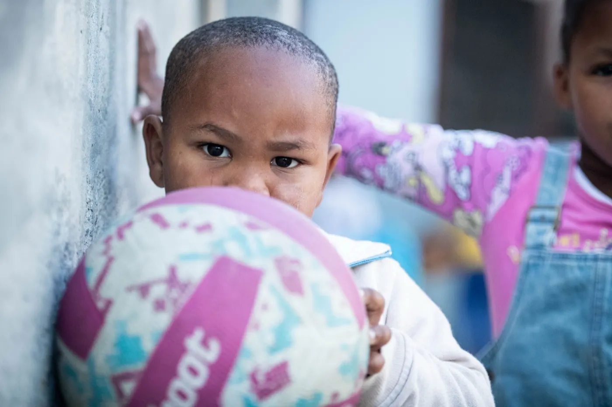
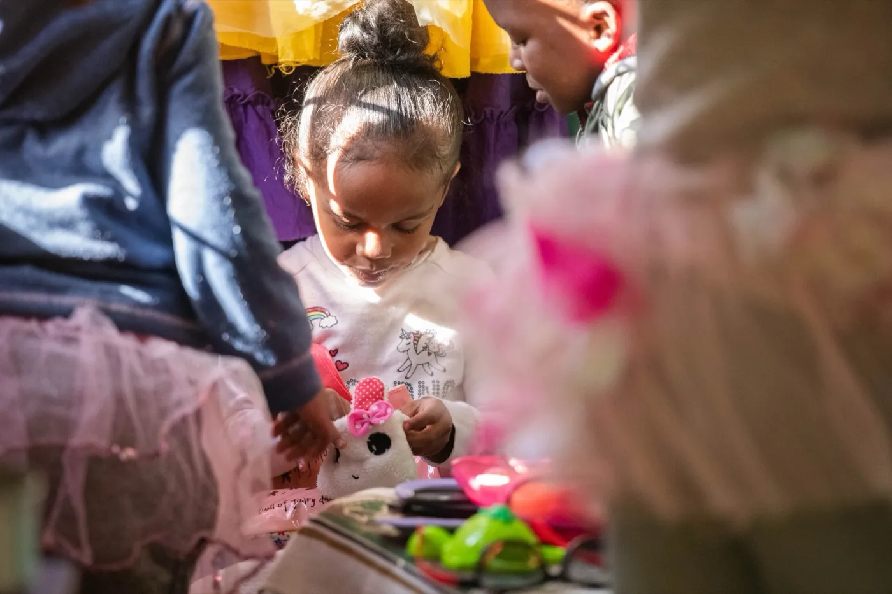

01
Vrygrond ECD Project
Core initiative in Vrygrond and Overcome Heights addressing systemic inequalities and providing access to quality early childhood development programmes.

Developing our country's most precious resource through a scalable Early Childhood Development (ECD) model: starting in Vrygrond and Overcome Heights.
About this partner
True North is a non-profit organisation pioneering Early Childhood Development initiatives within marginalised communities, focused on providing quality ECD programmes for all South African children.
True North's involvement within Vrygrond began in 2007, initially as a research project to record challenges faced by vulnerable communities, whilst exploring the framework provided by local and national government, as well as quantifying existing capacity within the non-profit sector.
The organisation operates on the principle of "Smart with Heart": clear strategy, measurable outcomes, and knowledge sharing combined with compassion, understanding, and perseverance to build sustainable, vibrant ECD initiatives.








Their work
01
Core initiative in Vrygrond and Overcome Heights addressing systemic inequalities and providing access to quality early childhood development programmes.
02
RDF equips ECD centres and their principals with a holistic roadmap for growth: becoming legal, strengthening leadership, improving quality, becoming financially viable and ensuring community impact.
Scale
True North's research-led model is designed to be replicated. Vrygrond and Overcome Heights are the proving grounds; the methodology can travel.
Even Ground's role
True North's research-led approach to ECD (measurable, methodical, transferable) fits Even Ground's investment thesis: fund organisations that can prove and replicate. Our support helps them codify their model and bring it to additional communities.
A story from True North
In Vrygrond, Nontutuzelo began her journey by opening her Little Lambs ECD center in her home so local children would have a safe place to learn and grow. Through her partnership with True North, she gained leadership training, curriculum support, and the tools to strengthen the quality of her center. Her dedication eventually led her to head the Vrygrond ECD Forum, representing more than 30 centers across the community.
Support Even Ground
Donations are made to Even Ground and help fund community-led programs like True North's across South Africa. Even Ground is a US 501(c)(3); contributions are tax-deductible.
Explore the network
Stay connected
Quarterly updates from Even Ground and our partner network. No spam, just stories and progress.